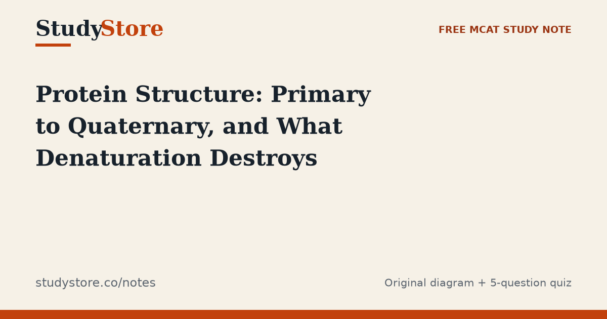

Free MCAT study notes
Notes
Plain-language MCAT biochemistry explainers, each with an original diagram and a 5-question mini-quiz. Free, no signup.
Plain-language MCAT biochemistry explainers, each with an original diagram and a 5-question mini-quiz. Free, no signup.